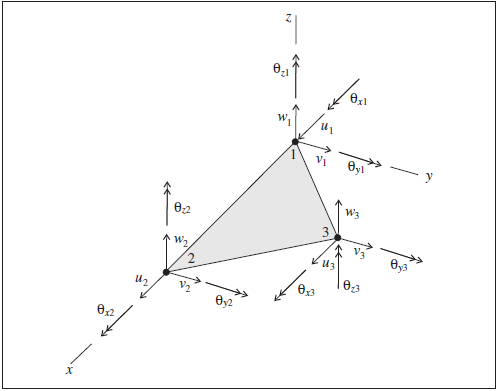
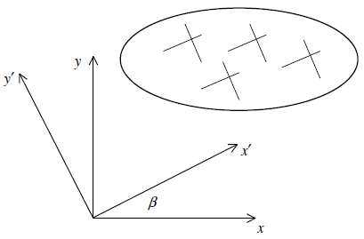
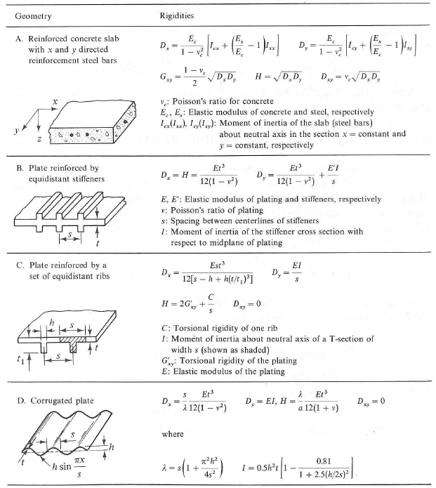

壳类结构单元
壳类结构单元包括壳单元、土工格栅单元与衬砌单元。这些单元的力学行为可分为壳材料本身的结构响应以及单元与网格的相互作用方式。壳材料的结构响应为所有壳类单元共有，本节予以描述。各单元类型特有的行为在该类型的小节中描述。
力学行为
各壳类结构单元（壳、土工格栅或衬砌）由其几何与材料性质定义。壳类单元假定为位于三节点之间、厚度均匀的三角形。任意弯曲的结构壳可建模为由壳类单元集合构成的棱面曲面。各壳类单元表现为各向同性或各向异性线弹性材料且无破坏限值；不过可沿壳类单元之间的边缘引入塑性铰线（该处转动可出现不连续），所用双节点流程与梁相同（见 壳结构中塑性铰的形成（Plastic Hinge Formation in a Shell Structure））。各壳类单元提供不同的与网格相互作用方式（见 壳结构单元（Shell Structural Elements）、土工格栅结构单元（Geogrid Structural Elements） 与 衬砌结构单元（Liner Structural Elements））。壳的结构响应由赋给该单元的有限单元控制。可用有限单元共五种：2 个膜单元、1 个板弯曲单元与 2 个壳单元。这些有限单元的一般性质见 壳有限单元（Shell Finite Elements）。由于它们都是薄壳有限单元，壳类单元适用于模拟横向剪切变形引起的位移可忽略的薄壳结构。厚壳结构应用网格单元建模。
各壳类单元都有各自的局部坐标系，如 图 1（Figure 1） 所示。该系用于指定所施加的压力荷载。材料坐标系单独用于指定正交各向异性材料性质，而表面坐标系（提供跨相邻壳类单元的壳中面连续描述）用于恢复应力——见 壳中的应力（Stresses in Shells）。壳类单元坐标系由其三个节点位置（图 1（Figure 1） 中标为 1、2 与 3）定义。壳类单元坐标系的定义使
- 壳类单元位于 \(xy\) 平面内，
- \(x\) 轴由节点 1 指向节点 2，且
- \(z\) 轴垂直于单元平面，且在壳面“外侧”为正。（每个壳类单元的两侧分别称为 outside 与 inside。）
壳类单元坐标系不可修改。

图 1：壳类单元坐标系与壳有限单元可用的 18 个自由度
响应量
可为所有壳类单元恢复应力量（包括应力合力与壳中作用的应力）。应力合力在表面坐标系中表示，该系提供跨相邻壳类单元的壳中面连续描述。应力在全局坐标系中表示。只有建立一致的表面坐标系后才能恢复应力量（见 应力恢复流程（Stress Recover Procedure））。应力量可通过 FISH 访问，并
- 用 结构壳单元列表应力（
structure shell list stress） 或 列出壳单元主应力命令（structure shell list stress-principal） 命令打印，或对 geogrid 或 liner 单元使用相应命令。 - 用
structure shell history命令（或对 geogrid 或 liner 单元的相应命令）监测，以及 - 用 Shell、Geogrid 或 Liner 绘图项绘制。
注意用 structure shell recover 命令（例如）算得的应力与应力合力，是存储在单元中并可供 FISH 使用的值。默认情况下壳类绘图项独立计算应力合力量。可指示绘图项显示用 structure shell recover 命令算得的值，此时在下一条命令发出之前它们不会更新。
属性
各壳类单元具有 4 个性质：
density，质量密度，\(\rho\)（可选——动力模式或重力启用时需要）[M/L3]
Isotropic:
isotropic，各向同性材料性质：\(E\) 与 \(\nu\)，其中 \(E\) 为杨氏模量 [F/L2]，\(\nu\) 为泊松比。
Orthotropic:
orthotropic-membrane，正交各向异性材料性质，{\(c^{\prime}_{11}, c^{\prime}_{12}, c^{\prime}_{22}, c^{\prime}_{33}\)} \([F/L^2]\)，定义材料坐标系中的膜材料刚度矩阵 \([{{\bf E}_m}^{\prime}]\)。
orthotropic-bending，正交各向异性材料性质，{\(c^{\prime}_{11}, c^{\prime}_{12}, c^{\prime}_{22}, c^{\prime}_{33}\)} \([F/L^2]\)，定义材料坐标系中的弯曲材料刚度矩阵 \([{{\bf E}_b}^{\prime}]\)。
Anisotropic:
anisotropic-membrane，各向异性膜材料性质，{\(c^{\prime}_{11}, c^{\prime}_{12}, c^{\prime}_{13}, c^{\prime}_{22}, c^{\prime}_{23}, c^{\prime}_{33}\)} \([F/L^2]\)，定义材料坐标系中的膜材料刚度矩阵 \([Eʹ_m]\)。
anisotropic-bending，各向异性弯曲材料性质，{\(c^{\prime}_{11}, c^{\prime}_{12}, c^{\prime}_{13}, c^{\prime}_{22}, c^{\prime}_{23}, c^{\prime}_{33}\)} \([F/L^2]\)，定义材料坐标系中的弯曲刚度矩阵 \([Eʹ_b]\)。
thermal-expansion，热膨胀系数，\(\alpha_t\) [1/T]
thickness, thickness, \(t\) [L]
材料本构行为可为各向同性、正交各向异性或各向异性；因此必须指定性质 (2a) 到 (2g) 之一。假定材料性质在壳类单元内均质（即不随位置变化），且壳厚度为常数。材料性质描述如下。
壳类单元通过 壳有限单元（Shell Finite Elements） 所述五个三节点三角形有限单元，把一般壳行为建模为膜作用与弯曲作用的叠加。模拟膜作用与弯曲作用的有限单元的材料性质由材料刚度矩阵描述
其中 \(t\) 为壳厚度，\([{\bf E}_m]\) 与 \([{\bf E}_b]\) 为材料刚度矩阵，通过本构关系把应力与应变联系起来
材料刚度矩阵用于形成有限单元刚度矩阵（\([{\bf D}_m]\) 供 CST 与 CST 杂交有限单元使用，\([{\bf D}_b]\) 供 DKT 有限单元使用）并恢复应力合力。(2) 中的应力由应力合力按下式得到
以下讨论中，我们用 \([{\bf E}]\) 指同时适用于 \([{\bf E}_b]\) 与 \([{\bf E}_m]\) 的关系。对各向同性材料性质，只需指定 \(E\)、\(v\) 与 \(t\)。对正交各向异性与各向异性材料性质，必须指定材料方向与 \(t\)。多数情形下 \([{\bf E}_m] = [{\bf E}_b] = [{\bf E]}\)；不过当模拟等效或换算的正交各向异性壳（其弹性性质等于原壳各组分性质的平均值）并独立控制膜刚度与弯曲刚度时，需要设置 \([{\bf E}_m] \not= [{\bf E}_b]\)。
各向同性材料性质
对各向同性壳，\([{\bf E}_m] = [{\bf E}_b] = [{\bf E}]\)，而 \([{\bf E}]\) 的六个常数与杨氏模量 \(E\)、泊松比 \(\nu\) 两个弹性常数按以下关系联系
\(c_{ij}\) 为不变量常数，在任何正交坐标系中保持相同取值。
正交各向异性与各向异性材料性质
在线弹性假定下，材料刚度系数的一般本构矩阵对称，可用 21 个独立弹性常数表示。正交各向异性材料有三个弹性对称主方向，其材料刚度矩阵可用 9 个独立弹性常数表示：
其中 \(x^{\prime} y^{\prime} z^{\prime}\) 为正交各向异性主方向。该关系描述三维正交各向异性连续体。通过强制满足平面应力（\(\sigma_{z^{\prime}} = 0\)）与无横向剪应变（\(\gamma_{x^{\prime}z^{\prime}} = \gamma_{y^{\prime}z^{\prime}} = 0\)）的 Kirchhoff 薄板条件，可把该关系限制为描述正交各向异性壳，从而使材料刚度矩阵可用 4 个独立弹性常数表示：
其中壳中面位于 \(x^{\prime} y^{\prime}\) 平面内。按主方向（此处记为 \([{\bf E^{\prime}}]\)）表示的材料刚度矩阵有四个独立常数，用以定义正交各向异性材料。
各向异性壳的材料刚度矩阵可用 6 个独立弹性常数表示：
其中壳中面位于 \(x^{\prime} y^{\prime}\) 平面内。按材料方向（此处记为 \([{\bf E^{\prime}}]\)）表示的材料刚度矩阵有六个独立常数，用以定义各向异性壳。
考虑某壳类单元，其局部坐标系 \(xyz\) 相对 \(x^{\prime}\) 轴旋转角度 \(\beta\)，如 图 2（Figure 2） 所示。应变变换矩阵 \(\begin{bmatrix}{\bf T_{\varepsilon}}\end{bmatrix}\) 通过下式把两个体系中的应变联系起来
\(\begin{bmatrix}{\bf T_{\varepsilon}}\end{bmatrix}\) 可用 \(\beta\) 表示为
两个体系中的应力通过下式联系
其中
以及
用于材料方向与 \(x\)、\(y\) 轴不一致时壳的材料刚度矩阵。对正交各向异性壳，\([{\bf E^{\prime}}]\) 有两个零项，但当正交各向异性主方向与 \(x\)、\(y\) 轴不一致时，\([{\bf E}]\) 中这些项一般不为零。

图 2：壳类单元坐标系 \(xyz\) 与材料坐标系 \(x^{\prime}y^{\prime}z^{\prime}\)
正交各向异性材料性质的确定
材料刚度矩阵 \([{{\bf E}_m}^{\prime}]\) 与 \([{{\bf E}_b}^{\prime}]\) 可用 (3) 中的弹性常数通过下式表示
它们也可用正交各向异性板的等效泊松比（\(\nu_{x^{\prime}}\) 与 \(\nu_{y^{\prime}}\)）、等效模量（\(E^{\prime}_{x^{\prime}}\) 与 \(E^{\prime}_{y^{\prime}}\)）与剪切模量（\(G\)）表示（Ugural 1981，第 141 页）：
Ugural 指出，正交各向异性板的模量与泊松比通过拉伸与剪切试验获得，与各向同性材料的情形相同。
当无法通过试验确定材料刚度时，可采用等效或换算正交各向异性板（其弹性性质等于原板各组分性质的平均值），其膜刚度用 (8) 中的关系近似，弯曲刚度用以下刚度近似。
\(D_{x^{\prime}}\)、\(D_{y^{\prime}}\)、\(D_{x^{\prime}y^{\prime}}\) 与 \(G_{x^{\prime}y^{\prime}}\) 分别表示正交各向异性板的抗弯刚度与抗扭刚度。图 3（Figure 3） 给出若干常见情形的刚度。这些情形包括带正交钢筋的钢筋混凝土板、由等间距加劲肋加强的板、由一组等间距肋加强的板以及波纹板。


图 3：各种正交各向异性板的刚度（取自 Ugural 1981 表 6.1，其中 \(H = 2G_{xy} + D_{xy}\)）*
注意
*经 McGraw-Hill 出版公司许可使用。
| 这些内容对您有帮助吗？… 版权与免责声明 |
FLAC3D © 2019, Itasca | 原文更新于 2020 年 10 月 8 日 |